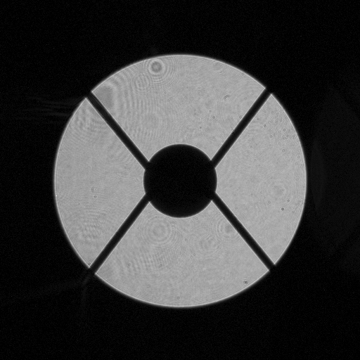
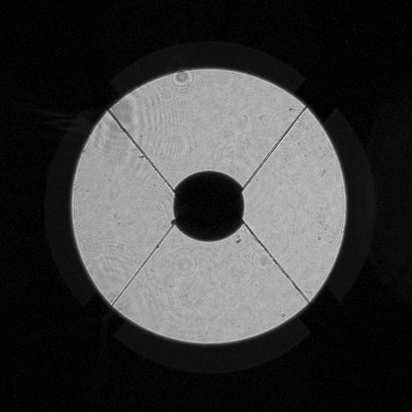
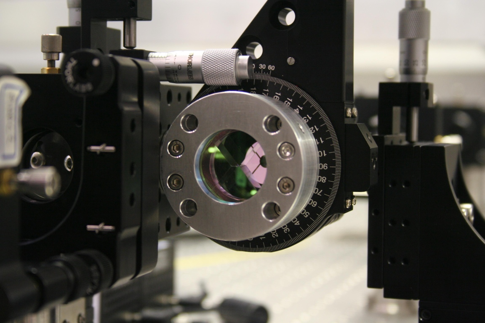

The Spider Removal Plate
The Spider Removal Plate (SRP) was initially designed and implemented to remove the spider vanes as diffractive affects from the spider vanes
compromise the maximum achievable contrast for a given image. However, fabrication errors could not be minimized to the degree necessary and hence
the SRP is no longer used in SCExAO. This page is dedicated to the SRP.
|

The Subaru Telescope Pupil, with its 30% central obscuration and spider vanes.
|
SRP
⇒
|

The SRP manages to considerably reduce the width of the spider, whose diffractive contribution falls below the overall residual speckle halo.
|
Unlike other conventional coronagraphs that require the use of a
so-called Lyot stop pupil mask to mask out the spider vanes, our
approach to their suppression uses geometric optics. A single tilted
flat plate of glass translates each of the four regions of the pupil created by the spider vanes such that the gaps in the pupil due to the spiders is reduced.

|
The incoming beam (from the left) encounters an AR-coated tilted
optical window of thickness ε, which translates the beam
inwards by an amount δ. In the small angle approximation, one
finds that:
δ = ε α (n-1)/n,
with α the tilt angle and n the refractive index of the
glass. For a window of thickness ε = 15 mm and index n
= 1.443 (fused silica at λ = 1.5 μm), each plate needs to be
tilted by α = 5 +/- 0.02o.
|
|
The SRP can be best described as a "pyramid-shaped rooftop" of
constant thickness. This picture shows the SRP inside a rotation stage
used to align with the orientation of the telescope pupil at the summit.
|

|